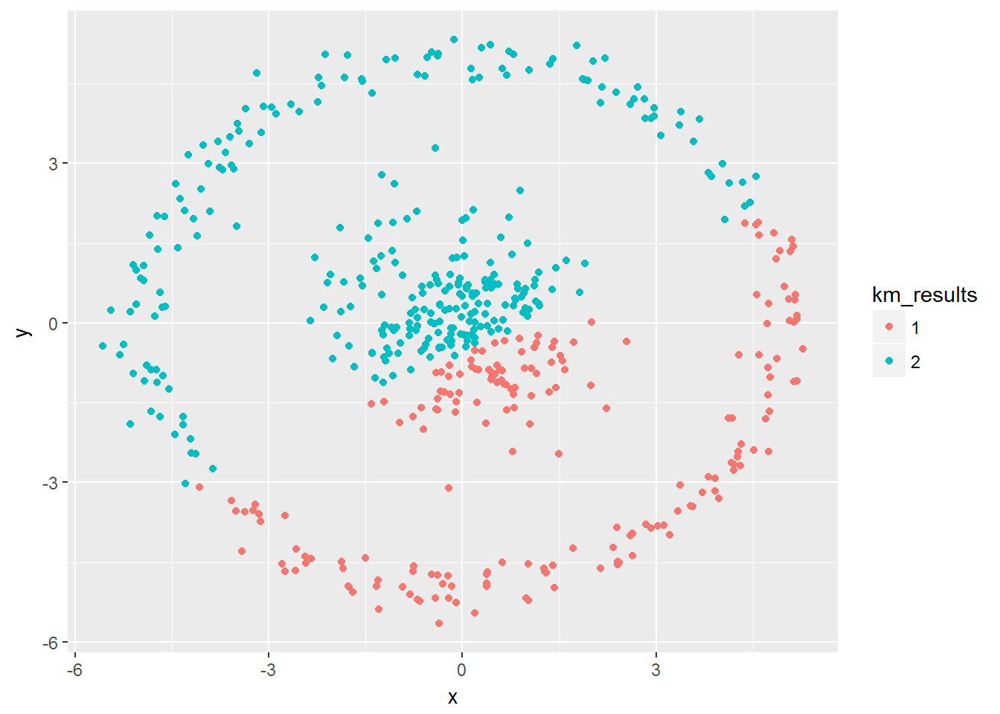

library(tidyverse)## -- Attaching packages ----------------------------------------------------------------- tidyverse 1.2.1 --## v tibble 1.3.4 v purrr 0.2.4
## v tidyr 0.7.2 v dplyr 0.7.4
## v readr 1.1.1 v stringr 1.2.0
## v tibble 1.3.4 v forcats 0.2.0## -- Conflicts -------------------------------------------------------------------- tidyverse_conflicts() --
## x stringr::boundary() masks strucchange::boundary()
## x dplyr::combine() masks randomForest::combine()
## x dplyr::filter() masks stats::filter()
## x dplyr::lag() masks stats::lag()
## x purrr::lift() masks caret::lift()
## x randomForest::margin() masks ggplot2::margin()
## x dplyr::select() masks MASS::select()
## x dplyr::slice() masks xgboost::slice()hwlink <- "https://raw.githubusercontent.com/reisanar/datasets/master/clusterThis.csv"
hwdata <- read_csv(hwlink)## Parsed with column specification:
## cols(
## x = col_double(),
## y = col_double()
## )ggplot(hwdata, aes(x=x,y=y)) + geom_point()- Do you see any type of clusters/groups right away?
2 groups
km_clusterThis <- kmeans(hwdata[, c("y", "x")], centers = 2)str(km_clusterThis)## List of 9
## $ cluster : int [1:500] 2 2 2 2 2 1 2 1 2 2 ...
## $ centers : num [1:2, 1:2] -2.278 1.332 1.298 -0.831
## ..- attr(*, "dimnames")=List of 2
## .. ..$ : chr [1:2] "1" "2"
## .. ..$ : chr [1:2] "y" "x"
## $ totss : num 6676
## $ withinss : num [1:2] 1875 2712
## $ tot.withinss: num 4587
## $ betweenss : num 2089
## $ size : int [1:2] 195 305
## $ iter : int 1
## $ ifault : int 0
## - attr(*, "class")= chr "kmeans"km_results <- as.factor(km_clusterThis$cluster)ggplot(hwdata, aes(x=x,y=y, color = km_results)) + geom_point()
dis <- dist(hwdata[, c("x", "y")])
hc_hwdata <- hclust(dis, method = "single")str(hc_hwdata)## List of 7
## $ merge : int [1:499, 1:2] -113 -295 -83 -159 -64 -261 -371 -68 -193 -65 ...
## $ height : num [1:499] 0.0132 0.0134 0.0176 0.0197 0.0197 ...
## $ order : int [1:500] 277 444 279 483 293 473 362 391 460 478 ...
## $ labels : NULL
## $ method : chr "single"
## $ call : language hclust(d = dis, method = "single")
## $ dist.method: chr "euclidean"
## - attr(*, "class")= chr "hclust"cut2 <- cutree(hc_hwdata, 2)hc_result <- as.factor(cut2)ggplot(hwdata, aes(x=x,y=y, color = hc_result)) + geom_point()polar <- hwdata %>% transform(r = sqrt(x^2 + y^2), theta=atan(y/x))km_polar <- kmeans(polar[, c("r", "theta")], centers = 2)str(km_polar)## List of 9
## $ cluster : int [1:500] 2 2 2 2 2 2 2 2 2 2 ...
## $ centers : num [1:2, 1:2] 4.95508 1.1842 0.03064 -0.00852
## ..- attr(*, "dimnames")=List of 2
## .. ..$ : chr [1:2] "1" "2"
## .. ..$ : chr [1:2] "r" "theta"
## $ totss : num 2324
## $ withinss : num [1:2] 241 306
## $ tot.withinss: num 547
## $ betweenss : num 1777
## $ size : int [1:2] 253 247
## $ iter : int 1
## $ ifault : int 0
## - attr(*, "class")= chr "kmeans"km_results2 <- as.factor(km_polar$cluster)ggplot(polar, aes(x=r,y=theta, color = km_results2)) + geom_point()I think the transformation performs an improved separation of clusters. In problem number 1, groups are very close at some points and in this case, we can identify clearly two groups. In case the groups are customers, a marketing campaign can give us better results.